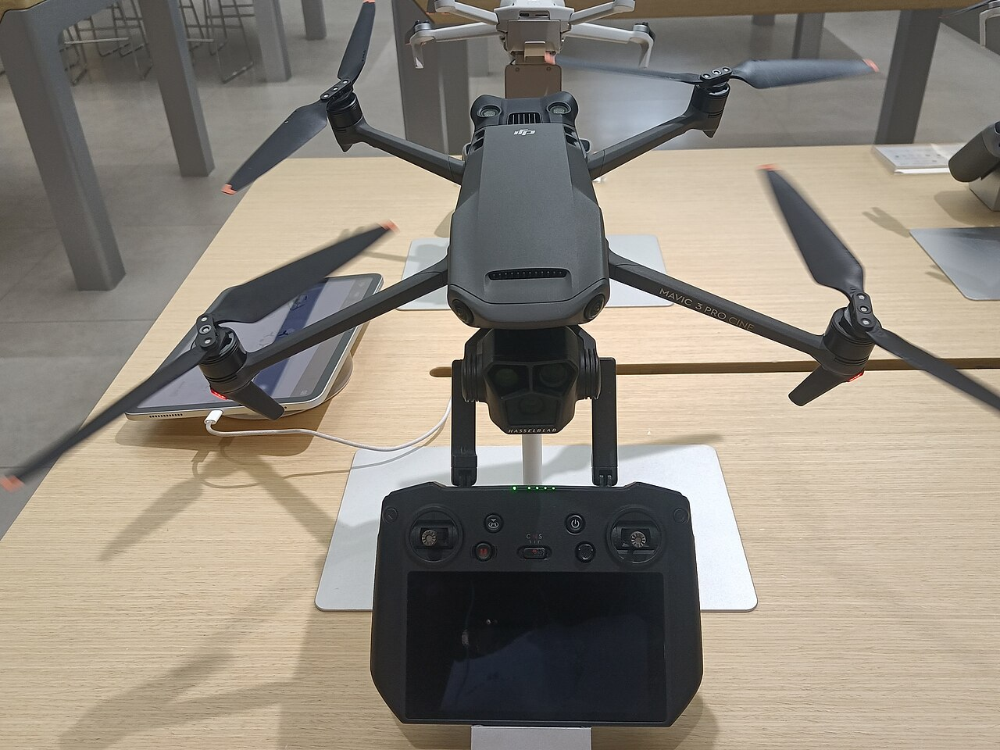
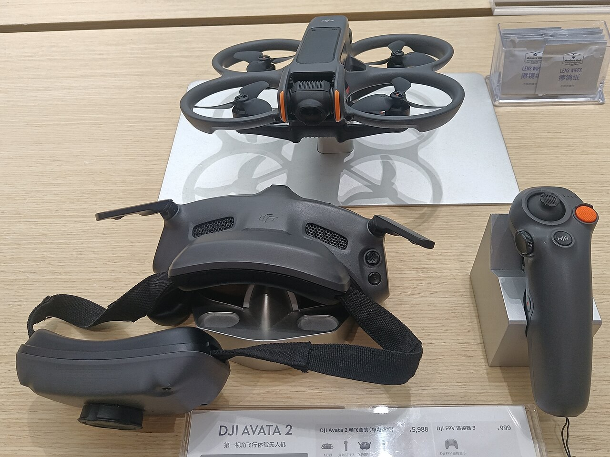

01

CINEMATIC AERIAL
넓게, 오래
기억되는 장면
안정적인 움직임과 넓은 시야를 활용한 시네마틱 항공 촬영. 자연, 관광지, 건축, 공간, 홍보 영상에 적합합니다.
ZETA PERSEI / AERIAL FILMING
하늘에서 바라보는
새로운 시선.
공간과 순간을 가장 인상적인 시선으로 기록합니다.
하늘은 단순한 촬영 공간이 아닙니다.
드론을 활용하면 지상에서는 볼 수 없었던 공간의 구조와 움직임을 새로운 시선으로 표현할 수 있습니다.
Zeta Persei는 촬영 목적과 공간의 특성을 분석하여 가장 적합한 항공 촬영 방식을 구성합니다.
02 / SERVICES
보여주고 싶은 장면에 맞춰
가장 좋은 시점을 설계합니다.

ONE SPACE.
INFINITE
PERSPECTIVES.
03 / THE APPROACH
기체의 선택부터 카메라의 이동까지,
결과물의 감정에 맞춰 결정합니다.
CINEMATIC AERIAL
안정적인 움직임과 넓은 시야를 활용한 시네마틱 항공 촬영. 자연, 관광지, 건축, 공간, 홍보 영상에 적합합니다.

REVEAL
건물이나 지형 뒤에서 피사체가 나타나는 듯한 연출로 공간의 구조를 자연스럽게 보여줍니다.

FPV
빠르고 역동적인 움직임으로 몰입감 있는 장면을 만듭니다. 스포츠, 자동차, 시설, 액션, 공간 소개에 활용합니다.
04 / TOOLS FOR THE STORY
장비가 만드는 차이를
결과물로 설명합니다.

01 / DJI MAVIC 3 PRO
안정적인 항공 촬영과 넓은 공간 표현에 적합합니다. 섬세한 디테일을 살려 자연스럽고 설득력 있는 화면을 만듭니다.

02 / DJI AVATA 2
빠른 움직임과 몰입감 있는 영상 표현에 적합합니다. 피사체 가까이에서 현장의 에너지를 전달합니다.
05 / THE PROCESS
아이디어를 비행 계획으로,
비행을 콘텐츠로 바꿉니다.
촬영 목적과 장소, 원하는 영상 스타일을 상담합니다.
촬영 환경과 공간을 확인하고 필요한 방식을 계획합니다.
프로젝트에 맞는 드론과 촬영 방식으로 영상을 촬영합니다.
촬영 결과물을 정리하여 최종 콘텐츠로 전달합니다.
06 / BEFORE THE FLIGHT
촬영 장소와 비행 조건에 따라 필요한 절차 및 제한 사항을 사전에 확인합니다.
07 / SELECTED WORK
DON'T JUST SHOW
THE SPACE.
SHOW HOW IT FEELS.
공간을 보여주는 것에서 끝나지 않습니다.08 / WHY AERIAL
지상에서는 볼 수 없는 새로운 시선으로 공간을 다시 발견합니다.
공간의 크기와 움직임을 효과적으로 표현해 장면에 리듬을 만듭니다.
단순한 항공 촬영을 넘어 콘텐츠에 맞는 장면을 구성합니다.
09 / QUESTIONS
프로젝트를 시작하기 전에
가장 많이 묻는 질문입니다.
촬영 장소와 비행 조건 등에 따라 가능 여부와 필요한 절차가 달라질 수 있습니다. 촬영 전 장소와 조건을 확인합니다.
촬영 목적, 장소, 일정, 원하는 장면 등을 알려주시면 프로젝트에 맞는 촬영 방향을 상담할 수 있습니다.
일반적인 항공 촬영과 FPV 촬영을 활용하여 프로젝트에 맞는 다양한 시점을 구성합니다.
촬영 장소, 일정, 촬영 시간, 촬영 방식, 결과물 범위 등에 따라 달라질 수 있습니다. 정확한 견적은 상담 후 안내합니다.
10 / PROJECT BASED
프로젝트의 촬영 환경과 제작 범위에 따라 상담 후 견적을 안내합니다.
프로젝트 상담하기 ↗LET'S MAKE THE FIRST FRAME
당신의 공간을 새로운 시선으로 보여주세요.
촬영 목적과 장소를 알려주시면 프로젝트에 맞는 촬영 방향을 함께 고민하겠습니다.